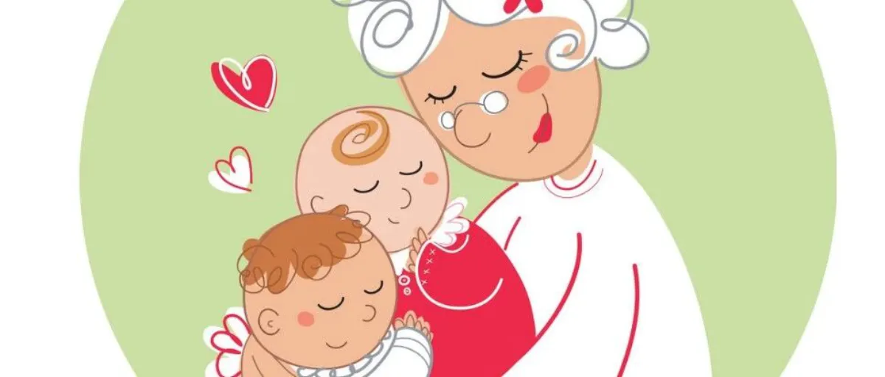
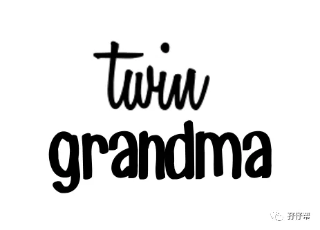
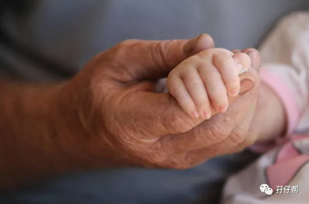
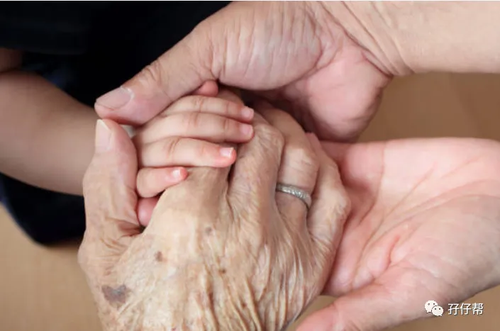
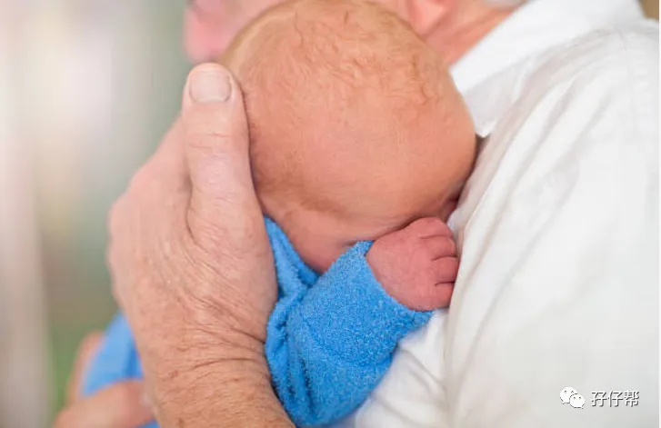

文|圆圈妈
图|来自网络
【01】
感恩节
她好像很怕我，想跟我说话，却欲言又止。
看得出来，她很想留在深圳，与我们生活在一起，可是身体不允许。
我们一行人送她去罗湖火车站坐车。
准备进站时，我不经意间看到她因长期吃药而浮肿的脸，还有她弯腰拾起过安检的行李物品那笨拙的动作，不知为何…想哭！
这个时候的她本应安享晚年，两个双胞胎孙子已入园，她终于可以潇洒地过自己想要的生活，约上三五知己，逛街，旅行，跳广场舞…
可是她却要回去那个落后的小村庄，回到冷冰冰的医院，等待即将到来的血透！
她是我的婆婆，我的第二个妈！
但，有时候，我觉得她甚至比亲妈还亲。
在我刚开始当妈妈，觉得人生最灰暗的时候，是她无条件支持着我，帮我挡住双胞胎孩子们的屎尿屁，助我一路芬芳回归职场,找回自我。
在你的身边是否也有这样一位默默付出的人在背后替你遮风挡雨呢？
今天是感恩节，我们一起来感谢在育儿路上，那些曾经帮助过我们的人，比如双胞胎孩子们的爷爷奶奶，外公外婆。
【02】
感恩节
我想感谢的是圆圆圈圈的奶奶，我的婆婆。
有一句话说的极是：这世界上哪有什么岁月静好，只因为有人为你负重前行。
像我这种生活常识极度匮乏，自理能力有限，养颗仙人掌都会枯死的人，不小心当了双胞胎妈妈，无异于世界末日的来临。
多亏老天爷给我开了一个绿色通道，圆圈的奶奶来了！
她从孕期开始就伺候我这个国宝级孕妇，接着照顾出生后的圆圈兄弟，一直到两岁！
因为有她在…
我不用半夜摸黑起床冲奶粉，喂奶…
我不用带娃睡觉，不用一晚上起来好几次给他们掖被子，
当我实在困得站着都能睡时，她帮我接过娃，完成下一步的拍嗝，哄睡…
因为有她在...
消毒奶瓶，清洗玩具，打扫奶渍，清理饭粒，下厨煮饭…我都鲜少有机会做
因为有她在...
我可以继续回到职场，两耳不闻屎尿屁！
我可以下班回家就有热饭吃，偶尔还能溜出去喝个下午茶。
圆圈生病了，她24小时监护着体温，给他们暖手暖脚...
圆圈无聊了，她耐着性子，不厌其烦地陪玩陪聊...
圆圈想出去浪了，顶着严寒酷暑，她都愿意…
有人说，全世界大概只有中国的老人会无条件全身心地养育自己的孙辈，甚至比亲生父母都要上心。
我不得不承认，搁我这，的确是这样的！
很多事情，连我自己都做不到，但她却做到了！
圆圈出生后，全家人都对这一对长得一模一样的同卵双胞胎一脸懵逼，只有她一眼就看出区别并很快就摸清楚了两人各自不同的作息规律。
圆圆哭的时候，不好哄，需要抱着走几圈才行，圈圈哭的时候，只需要轻拍几下就能搞定。
圆圆吃奶容易睡着，看他吃得慢了，要把奶嘴拔出来，看他醒了再塞回去。
圈圈每次吃的少，多喝一点就会吐，所以要少量多次地喂。
圆圆喜欢选在换尿布的时候尿尿，所以每次更换尿布时，要静候几秒，免得被尿了一身湿。
圈圈想拉臭臭时，脸会憋得通红，然后放一个响屁…
圆圆睡觉时喜欢抱着毛绒绒的被子，圈圈则喜欢咬着被子一角。
…
这一切，都是她夜以继日地照顾圆圈兄弟总结出来的，而我却对此一无所知。
小姑子经常说她的身体是当年帮我们带娃累垮的。
我每次都默认，从不敢反驳。
她本来有慢性肾炎，前两年帮忙带圆圈，的确是累坏了，她的辛苦，我看在眼里，一直铭记于心！
前段时间，当医生说她必须靠血透维持时，我震惊不已！好像4年前，圆圈外公被医生宣判得了肝癌一样，心里沉重极了！
什么时候，经常不被我想起，只是偶尔念起，跟我没有血缘关系，但是待我如亲闺女的婆婆，在我生命中那么重要了！重要到，一想到可能三五年后我们从此天各一方，心里就难受到想哭！
【03】
感恩节
“我的公婆不帮我带双胞胎，也不给钱我请保姆，以后我也不会养他们。”
这是我在某个妈妈群看到的一句话，然后我就退群了！
照顾孩子，父母才是第一负责人。
我一直很赞同那句很现实的话：老人帮带娃帮你是情分，不帮也是本分！
老一辈的晚年生活，带孙辈还是寻找诗和远方？他们有权利自己选择，我们作为晚辈无权干涉！
我退出妈妈群的原因是道不同不相为谋。
老人是否帮忙带娃与我们要不要赡养老人，完全是两码事！像我们这种上有老下有小的中年少妇，难道养娃养老人不是天经地义的吗！？
养育双胞胎大多需要支援，经济能力允许可以请育儿嫂，但大多数双胞胎家庭因为各种原因，都需要老人家过来帮忙带娃。
我时常觉得，比生一对双胞胎更幸运的是，我的双胞胎有老人家帮忙带。
每次我与公婆因育儿观念不一致发生矛盾时，我就这样安慰自己：有人带已经阿弥陀佛了，自己要上班又带不了，那就不要诸多要求了吧！
要是看不惯，那就自己来！
要是觉得能凑合，那就忍！
对于老人家带娃这件事，心大一点，期望值低一点，再佛系一点，你就会好过一些了！
双胞胎孩子们终究会长大，那些吃多少奶，一天喂几次，几点睡，睡多久，怎么哄，要不要抱….再这么折腾也就那两三年光景的事情，别因此伤了和气！
须知道，老人帮忙带孩子的初衷，从来不是因为“爱这个婴儿”，而是爱自己刚升级做父母而手忙脚乱的孩子。
不止是今天感恩节要谢谢他们，而是每时每刻！
对愿意帮忙带娃的老人，要心存感激！
对不愿意帮忙带娃的老人，也要表示理解！
感恩帮我们带娃的老人家并善待他们，那就是善待未来的自己！
最后，想对养育双胞胎路上曾帮助过我的所有人说一声，你们辛苦了！谢谢！
-END-
今日互动话题
#养育双胞胎，你最想感谢谁？#
评论区聊一聊呗！
一关注孖仔帮一




